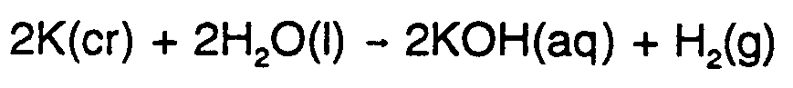
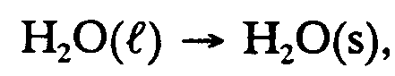
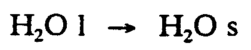
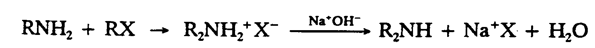
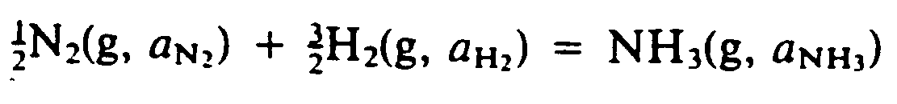
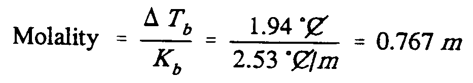
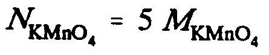

|
©hoose LANGUAGE bArd fr©Ide
9 ABBREVIATIONS AND ACRONYMS
Single letters and combinations of letters
used as "shorthand" names of chemical matter are common in chemistry. They
may consist of a mixture of upper- and lower-case letters, small capital letters,
Greek letters, numerals, superscripts and subscripts. Different type forms are
often mixed. All must be duplicated in braille.
9.1 General Rules.
(1) Capitalize and italicize letters individually.
(2) Do not use contractions.
(3) Do not contract to, into, and by.
(4) Punctuate in mathematical mode.
(5) Space as in print.
Example 9.1-1: acyl-S-CoA
acyl-;,s-,co,a
Example 9.1-2: CTP
,c,t,p
Example 9.1-3: D : N (dextrose-nitrogen ratio)
,d "1 ,n (dextrose-nitrog5 ratio)
Example 9.1-4: RNase
,r,nase
Example 9.1-5: RNAse
,r,n,ase
Example 9.1-6: FMNH2
,f,m,n,h2
Example 9.1-7: tRNAHis
t,r,n,a;,his
Example 9.1-8: IgM
,ig,m
Example 9.1-9: 5'-CmCGG
#5'-,c^m",c,g,g
Example 9.1-10: trp operator
.;t.;r.;p op]ator
Example 9.1-11:
Ser-Tyr-Ser-Met-Glu-His-Phe-Arg-Trp-Gly-Lys-Pro-Val-Gly-Lys-Lys-Arg-Arg-Pro-Val20
Lys-Val-Tyr-Pro-Asp-Ala-Gly-Glu-Asp-Gln-Ser-Ala-Glu-Ala-Phe-Pro-Leu-Glu-Phe39
,ser-,tyr-,ser-,met-,glu-,his-,phe-
,arg-,trp-,gly-,lys-,pro-,val-,gly-
,lys-,lys-,arg-,arg-,pro-,val;20
",lys-,val-,tyr-,pro-,asp-,ala-,gly- ,glu-,asp-,gln-,ser-,ala-,glu-,ala- ,phe-,pro-,leu-,glu-,phe;39
Example 9.1-12: E. coli Exo I
.;,e_4 .coli ,exo ;,i
Example 9.1-13: tR1
.;t;.;,r1
Example 9.1-14: A T C A A T T G A T C A T G C G T T C A A G 5'
,',all lrs >e capitaliz$ 9 pr9t4,'
atcaattgatcatgcgttcaag"5'
Example 9.1-15: (all letters variables)
heat gained
or lost |
= |
( |
mass
in grams |
) |
( |
change in
temperature |
) |
( |
specific
heat |
) |
h1t ga9$ or lost
.k (mass 9 grams)
(*ange 9 temp]ature)(specific h1t)
q .k (m)(.,d,t)(,c;p")
9.2 Physical States. The letters representing the physical state of chemical
compounds are not to be considered abbreviations. Some examples are:
(l) liquid
(g) gas
(c) or (cr) crystalline
(aq) aqueous
(s) solid
If print does not show these in parentheses, they must be spaced from the
compound and the English letter indicator must be used. Type form is
ignored.
Example 9.2-1: 
#2,k(cr)+2,h2,o(l)
$o #2,k,o,h(aq)+,h2(g)
Example 9.2-2:
,h2,o(l) $o ,h2,o(s),
Example 9.2-3:
,h2,o ;l $o ,h2,o ;s
9.3 Standard International Units of Measurement. These are abbreviations, as
defined by the Nemeth Code, when they are associated with a numeral or
a variable representing a numeral. However, if these units themselves are
used as variables, they are not to be treated as abbreviations. Both
abbreviations and variables are punctuated in the mathematical mode. To,
into, and by cannot be contracted and attached to an abbreviation.
When transcribing degrees of temperature, the rules of the Nemeth Code
do not apply in chemistry. The spacing and location of the abbrevia-
tions and the degree sign must follow the print. If the degree sign is
unspaced from the abbreviation, the letter is no longer a "single letter"
as defined by the Nemeth Code and the English letter indicator is not used.
Example 9.3-1: (g is an abbreviation)
165 g
#165 ;g
Example 9.3-2: (g and cm are variables)
g/cm
g_/cm
Example 9.3-3: (R is a constant, other letters are abbreviations)
R = 8.31 dm3· kPa/mol· K
,r .k #8.31 dm^3 * k,pa_/mol * ;,k
Example 9.3-4: (Greek letter in abbreviation; punctuated in the mathematical mode)
5 µg/ml.
#5 .mg_/ml_4
Example 9.3-5: (the C is a "single letter")
10°C
#10^.* ;,c
Example 9.3-6: (completely unspaced so there are no "single letters")
20.0°C
#20.0^.*",C
Example 9.3-7: (degree sign follows the C, C is not a "single letter")
1.86C°
#1.86,c^.*
9.4 Letters Representing Chemical Groups. These may appear in regular
or italic type when associated with chemical notation. The type form
must be indicated in braille and print spacing must be followed.
Example 9.4-1: (R and X represent chemical groups)

1,R,N,H2+,R,X
2 $O ,R2,N,H2"^+",X^-
3
4 ,NA^+",O,H^-
5 $333333333333O ,R2,N,H+,NA^+",X
6
7 +,H2,O
Example 9.4-2: (K is a constant; A and B represent chemical groups)
,K
.K ?@(,H3,O^+"@)@(,A^-"@)
/@(,H,A@)@(,H2,O@)#
,K
.K ?@(,B,H^+"@)@(,O,H^-"@)
/@(,B@)@(,H2,O@)#
Example 9.4-3: (M represents a chemical group)
MO2
.;,m,o2
Example 9.4-4: (R represents reaction rate, T represents temperature, a represents activity, and ln is natural logarithm)
.,D;R",G
.K .,D;R",G^.*
"+,R,TLN ?A;,N,H;;3
"/A;,N;;2^1_/2"a;,h;;2^3_/2"#
Example 9.4-5: (g means gas; a is activity)

?1/2#,N2(G, A;,N;;2")
+?3/2#,H2(G, A;,H;;2")
.K ,N,H3(G, A;,N,H;;3")
Example 9.4-6: (Ox - oxidation, Red - reduction, R - right, L - left)
OxR + RedL = RedR + OxL
,ox;,r"+,red;,l .k ,red;,r"+,ox;,l
Example 9.4-7:
The lumped constant KM, which replaces the term
(k-1 + k+2)/k+1 , is called the Michaelis-Menten constant.
(7) ?@(,S@)(@(,E;,T"@)-@(,E,S@))
/@(,E,S@)#
.K ?K;-1"+K;+2"/K;+1"#
.K ,K;,M
,! LUMP$ 3/ANT ,K;,M, : REPLACES !
t]m (K;-1"+K;+2")_/K;+1, IS CALL$ ! .,MI*AELIS-,M5T5 .3/ANT4
Example 9.4-8: (R represents a free radical, M a monomer, and k is a constant.)
k;np
,r;n"*+,m $3333o ,r;n+1"*
Example 9.4-9: (mixture of letters and abbreviations)
Suppose a piece of lead with a mass of 14.9 g at a temperature of 92.5°C
is dropped into an insulated container of water. The mass of water is 165 g
and its temperature before adding the lead is 20.0°C. What is the final
temperature of the system? Cp lead = 0.1276 J/g·C°
,SUPPOSE A PIecE ( L1D )A MASS (
#14.9 ;G AT A TEMP]ATURE ( #92.5^.*",C
IS DROPP$ 96AN 9SULAT$ 3TA9] ( WAT]4 ,!
MASS ( WAT] IS #165 ;G & XS TEMP]ATURE
2F A4+ ! L1D IS #20.0^.*",C_4 ,:AT IS !
F9AL TEMP]ATURE (! SY/EM8
,C;P LEAD .K #0.1276 ;,J_/;G * ,C^.*
9.5Letters Representing Concentration of Solutions. These letters must follow
the print spacing and type form.
M Molarity (number of moles of a solute in 1 dm3 of solution)
m molality (number of moles of a solute in 1 kilogram of solvent)
N Normality (equivalent mass of solute per liter of solution)
F Formality (number of moles per liter of solution)
Example 9.5-1: (A represents a chemical group; F is Formality; L is an abbreviation)
| Formality of A = FA =
|
| Moles A added to the solution |
|
| Liters of solution |
|
For example, we can prepare 1.00 F HCl by mixing water with 1 mol HCl
until the volume is 1 L.
,=MAL;Y ( ,A
.K .;,F;,A
.K ?,MOLES ;,A A4$ 6! SOLUTION
/,LITERS ( SOLUTION#
,= EXAMPLE1 WE C PREP>E #1.00 .;,F
,H,CL 0MIX+ WAT] ) #1 MOL ,H,CL UNTIL ! VOLUME IS #1 ;,L_4
Example 9.5-2: (N is normality; M is molarity)
Since there is only one proton per molecule, N = M = 0.150 N.
,s9ce "! is only "o proton p] mole-
cule1 .;,n .k .;,m .k #0.150 .;,n_4
Example 9.5-3: (N is normality, unspaced)
30.0 mL of a 4.00N solution
#30.0 m,l (a #4.00.;,N solu;n
Example 9.5-4: (N is normality, spaced)
0.1536 N
#0.1536 .;,n
Example 9.5-5: (m is molality, unspaced)
1m solution
#1.;m solu;n
Example 9.5-6: (m is molality; C is an abbreviation; T is a variable; K is a
constant)

,Molality
.k ?.,d,t;b"/,k;b"#
.k ,?1.94 [^.*",c]
,/2.53 [^.*",c]_/.;m,#
.k #0.767 .;m
Example 9.5-7: (M is molarity, unspaced)
Calculate the [OH -] of a 0.500M solution of aqueous ammonia.
,calculate ! @(,o,h^-"@) (a
#0.500.;,M solu;n ( aque|s ammonia4
Example 9.5-8: (M is molarity, spaced)
AgCl is soluble in 15 M aqueous ammonia, NH3 ; AgI is not dissolved by
15 M aqueous ammonia, NH3 .
,ag,cl is solu# 9 #15 .;,m aque|s
ammonia1 ,n,h3_2 ,ag,i is n 4solv$ by
#15 .;,m aque|s ammonia1 ,n,h3_4
Example 9.5-9: (M is molarity)
0.215-M KOH solution
#0.215-.;,M ,k,o,h solu;n
Example 9.5-10: (N is normality)
0.100-N solution of NaOH
#0.100-.;,n solu;n ( ,na,o,h
Example 9.5-11: (N is normality; M is molarity)

9.6Roman Numerals Followed by Letters. Combinations of this type are
often found in periodic tables and in discussions of the periodic table.
Example 9.6-1: IIIA
,,iii,a
|
 Tჸe $_hodor bARionlegitim@.
Tჸe $_hodor bARionlegitim@.